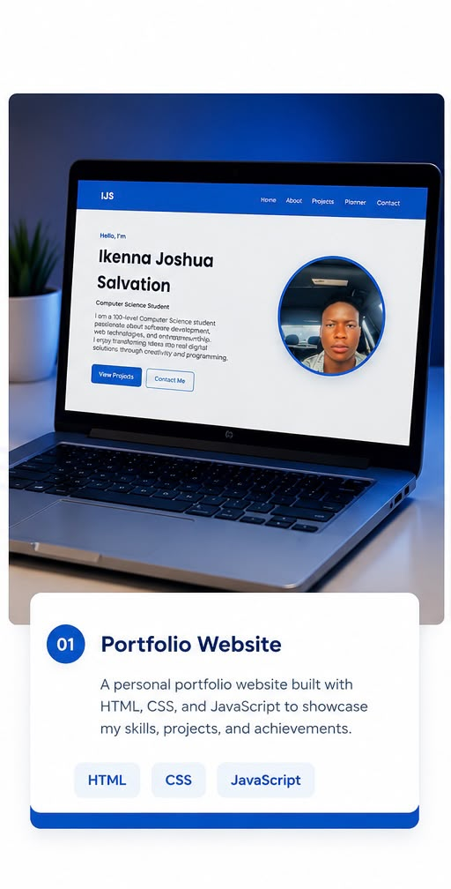
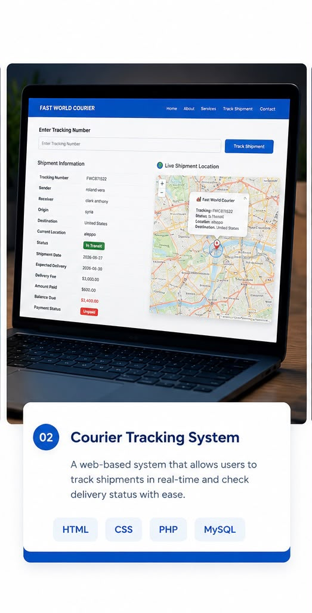
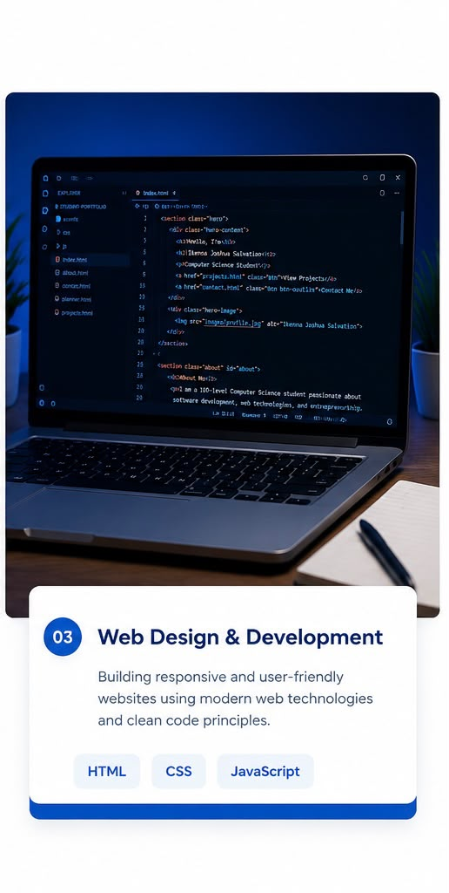

Below are some projects demonstrating my web development skills using HTML, CSS and JavaScript.

A responsive portfolio website created for my COS106 assignment using HTML, CSS and JavaScript.

A shipment tracking website where customers can check package delivery status online.

A clean and modern website showcasing responsive layouts, animations and user-friendly interfaces.